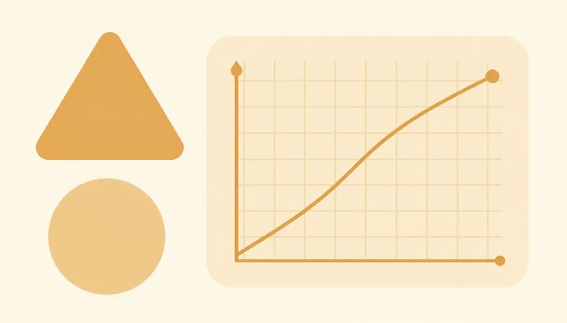

<title>Klaro Market Versions</title>
<link rel="stylesheet" href="https://fonts.googleapis.com/css2?family=Manrope:wght@400;500;600;700&display=swap">
<link rel="stylesheet" href="klaro.css">
<style>
.pick { padding-block: 56px 72px; display: flex; flex-direction: column; gap: 28px; }
.pick header { display: flex; flex-direction: column; gap: 12px; }
.pick header img { height: 34px; width: auto; align-self: flex-start; }
.grid { display: grid; grid-template-columns: repeat(2, minmax(0, 1fr)); gap: 18px; }
.v { text-decoration: none; color: var(--ink); overflow: hidden; display: flex; flex-direction: column; }
.v .art { aspect-ratio: 16 / 8; overflow: hidden; position: relative; background: var(--surface); }
.v .art img { width: 100%; height: 100%; object-fit: cover; transition: scale .3s var(--ease-out); }
.v:hover .art img { scale: 1.04; }
.v .art .tag { position: absolute; top: 12px; inset-inline-start: 12px; background: rgb(255 255 255 / .9); }
.v .body { padding: 18px 22px 22px; display: flex; flex-direction: column; gap: 6px; }
.v p { color: var(--ink-soft); font-size: 14px; }
.v .go { margin-top: 6px; font-weight: 700; font-size: 12px; color: var(--purple-dark); }
@media (max-width: 760px) { .grid { grid-template-columns: minmax(0, 1fr); } }
</style>
<main class="wrap pick">
  <header>
    
    <span class="kicker">Klaro Market · four versions</span>
    <h1 class="h2">A course marketplace, public and in the app.</h1>
    <p class="lead">Each version works two ways. Use the <b>Public / In the app</b> switch in the bottom corner: Public is the open page with Enroll leading to sign-up; In the app it becomes <b>Market</b> in the student top bar and Enroll opens a checkout step. Click any course for its details. Courses, tutors and prices are examples.</p>
  </header>
  <div class="grid">
    <a class="card v lift" href="v1.html"><div class="art"><span class="tag">V1</span></div><div class="body"><h2 class="card-title">Catalog</h2><p>Search first, with a level switch, subject chips with counts and sorting. The grid rearranges with motion as you narrow it.</p><span class="go">Open V1 ›</span></div></a>
    <a class="card v lift" href="v2.html"><div class="art"><span class="tag">V2</span></div><div class="body"><h2 class="card-title">Shelves</h2><p>A featured course that changes on its own, then rows to scroll: by level, popular, and by tutor.</p><span class="go">Open V2 ›</span></div></a>
    <a class="card v lift" href="v3.html"><div class="art"><span class="tag">V3</span></div><div class="body"><h2 class="card-title">Tutors first</h2><p>Floating tutor faces up top. Pick a tutor and their card opens across the row with their courses.</p><span class="go">Open V3 ›</span></div></a>
    <a class="card v lift" href="v4.html"><div class="art"><span class="tag">V4</span></div><div class="body"><h2 class="card-title">Plan builder</h2><p>Exam, then subjects, then courses into a study plan. Courses fly into the plan and the monthly total counts up.</p><span class="go">Open V4 ›</span></div></a>
  </div>
</main>
